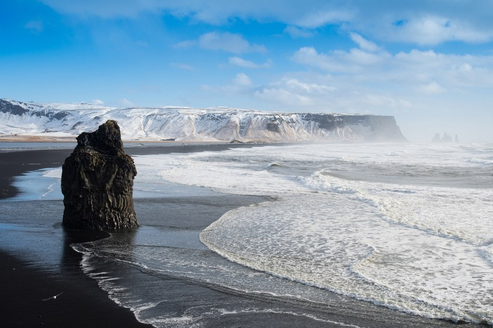

COUNTRIES
Antarctica
Antarctica
That's right, we put an entire continent on here. Although 99 percent of Antarctica is covered with ice, the landscape still manages to be stunningly diverse—surreal blue glaciers, active volcanoes, the rough waterways of the Drake Passage, and 360-degree views of untouched snow. And those views are made even better when an emperor penguin or humpback whale makes an appearance.
Asia
Wulingyuan Scenic Area, China
Scenic might be an understatement in this case. This 100-square-mile attraction in China's Hunan Province contains thousands of sandstone pillars that are nature's version of skyscrapers—some even stretch taller than the Empire State Building's midpoint.
Zhangye Danxia Landform, China
These striped, multicolored mountains are Mother Nature's answer to Photoshop. Red sandstone and mineral deposits have been building up in China's Danxia Landform Geological Park for more than 20 million years, causing the surreal layered effect.
Raja Ampat Islands, Indonesia
Raja Ampat is a chain of some 1,500 islands strung along nearly 29,000 square miles off the western coast of West Papua. The views here are downright prehistoric: jagged lava peaks clad in green jungle; palms sprouting out of sheer cliff walls; mist drifting in and out of deep canyons. The biodiverse islands are easily one of the most physically ravishing destinations on the planet.

Boracay, Philippines
With its gentle coastlines and transporting sunsets, it's easy to see why Boracay was voted one of the best islands in the world by our readers. Unfortunately, it's become too touristed—the island closed for "rehabilitation" last year to compensate for overcrowding and unregulated development; it's since reopened to a limited number of visitors per day.
Lake Baikal, Russia
The oldest and deepest lake on earth—it reaches a depth of one mile in some spots—is also home to our planet's only freshwater seals. Come winter, the lake transforms into a wonderland, with jagged ice caves encircling what amounts to the world's largest ice skating rink.
Cappadocia, Turkey
Cappadocia, an area in Turkey where entire cities have been carved into rock, is pretty incredible on its own. But whenever hot-air balloons pepper the sky, its beauty level literally skyrockets.
Pamukkale, Turkey
The 17 tiered pools of Pamukkale ("cotton castle" in Turkish) are as beautiful as hot springs get. The stacks of white travertine (a form of limestone) overlook the city of Denizli, and the still, 94-degree Fahrenheit waters perfectly reflect the cerulean Aegean sky.
Halong Bay, Vietnam
Halong Bay, located in northeast Vietnam, is beloved for its blue waters and spread of limestone islands, all occupied by tropical trees and wildlife. Board a Chinese junk boat to experience the beauty—and associated myths and stories—of the mist-shrouded emerald basin for yourself.
Canada
Banff National Park, Canada
Easily one of the most beautiful spots in Canada, Banff National Park overwhelms with views of the Canadian Rockies and regular cast of wildlife. The park is also known for its abundance of beautiful lakes, including Lake Louise, Moraine Lake, and glacial Lake Minnewanka—each more pristine than the last.
Europe
Plitvice Lakes National Park, Croatia
If you can make it through the crowds of selfie-taking tourists, you'll discover that Plitvice Lakes National Park more than lives up to the hype. The 16 terraced lakes of Croatia's most popular site are connected by waterfalls and vary in shades of blue, resulting in something that defies the imagination.
Faroe Islands
If you haven't heard of the Faroe Islands, you definitely will soon. With its grass-roofed houses, rocky coastlines, and abundance of puffins, the self-governed group of 18 volcanic islands is basically one giant photo op. Mulafossur Waterfall might be the archipelago's most famous site—the cascade is like something from a fantasy novel, falling over the rocky cliffs of Vagar Island to the ocean below, with the green hills of Gásadalur village as a backdrop.

Provence, France
The seemingly endless stretches of lavender fields make Provence one of the prettiest (and best-smelling) places in France. Distilleries—where the essential oil from the flowers are bottled or used to make soaps, lotions, and creams—dot the area, but the multitude of fields featuring unreal violet views are the real pride of Provence.
Zakynthos, Greece
Far less crowded than sister islands Mykonos and Santorini, Zakynthos has some of the most beautiful beaches in the Greek Isles—namely, Navagio Beach. Sheltered by cliffs, Navagio is only accessible by boat, and draws its name (“Shipwreck”) from a freighter that ran aground, was abandoned, and still rests in the beach’s white sands today.

Disko Bay, Greenland
Greenland is icy, mysterious, and one of the most naturally beautiful places on the planet. Disko Bay perfectly illustrates the untouched allure of the island with its impressive icebergs, charming coastal settlements, and common sightings of breaching humpback whales.
Reynisfjara, Iceland
If the moon had a shoreline, it would probably look something like Reynisfjara. Just a 20-minute drive from Vik in southern Iceland, jet-black sand and spectacularly shaped basalt columns make the this beach one of the most impressive sites in an already impressive country.
Cliffs of Moher, Ireland
Few places exemplify the raw, untamed beauty of Ireland’s west coast as this natural wonder, which tops 702 feet at the highest point. And while you might know them better as the Cliffs of Insanity from The Princess Bride (inconceivable!), in reality, the cliffs are located just south of Galway.
Trolltunga, Norway
Any Pinterest or Instagram user has probably seen a photo of Trolltunga ("Troll's Tongue), Norway's undeniable photography darling. The protruding rock sits about 2,300 feet above Lake Ringedalsvatnet, tempting travelers to inch out to the edge. Unfortunately, Trolltunga has fallen prey to "death by popularity" and local organizations have called for tourist caps to protect the site. But even if you don't get your once-in-a-lifetime profile picture on the rock's edge, you can still soak up some epic fjord views from the surrounding mountain area.
The Azores, Portugal
Roughly 900 miles off the coast of Lisbon, this Portuguese archipelago can inspire wanderlust with a single photo. The verdant valleys, steep ocean-side cliffs, rows of blue hydrangeas, and scattering of waterfalls make the Azores a paradise worth exploring—just make sure you visit before everyone you know beats you to it.
Isle of Skye, Scotland
With fairy pools and endless undulations of hills, the magical Isle of Skye is the stuff dreams are made of (regardless of whether you've binge-watched Outlander yet). While the nature here is timeless, the island has a food scene that's totally modern—we can't think of a more beautiful place to sample Michelin-starred cuisine.

Playa de Las Catedrales, Spain
As a destination on Europe's Iberian Peninsula, Spain is renowned for its island paradises and semi-remote beaches. We're particularly big fans of Playa de Las Catedrales, a small stretch of sand on the Galician coast where natural stone arches form a walkable "cathedral" at low tide.
Japan
Arashiyama Bamboo Grove, Japan
Every traveler should experience the ethereal glow and seemingly endless heights of this bamboo grove on the outskirts of Kyoto. The experience even extends beyond the visual realm: In 1996, Japan's Ministry of the Environment included the sounds here—wood creaking, leaves rustling—as one of the top 100 Soundscapes of Japan.
Mount Fuji, Japan
It's hard to pick the single most beautiful place in Japan, but 12,388-foot Mount Fuji just might take the prize. Visit Lake Kawaguchiko in the spring for some of the best views of the mountain and cherry blossom trees—a postcard-worthy sight if we ever saw one. Or if you're an avid hiker, plan a trip for mid-July until the end of August, when the snow melts enough to allow access to Fuji's summit.
Middle East
Socotra, Yemen
Nearly 350 miles off the southern coast of Yemen, Socotra has both the remoteness and surrealism of some strange, distant planet. The UFO-like dragon's blood trees are the island's most notable feature—we dare you to find those in your friendly neighborhood park.
Oceania
The Great Barrier Reef and Whitehaven Beach, Australia
Although the Great Barrier Reef—the largest living thing on Earth—can be seen from space, the best vantage point belongs to the avid snorkelers and scuba divers who visit each year. If you must resurface, do it at the Whitsundays—namely Whitehaven Beach, often considered to be one of the world's most beautiful beaches.
Uluru, Australia
No matter how you choose to view the 700-million-year-old Uluru (or Ayers Rock)—from above by hot air balloon, across the desert on a motorcycle, hiking at the base during the technicolor sunset—witnessing its majesty should be on every traveler's list.
Lake Tekapo, New Zealand
While purple, pink, and blue-hued lupin flowers may not be native to New Zealand (they hail from North America), the really do seem to bloom the most vibrantly on the nation's South Island. At Lake Tekapo, in particular, the flowers juxtapose against the backdrop of the water to create one of the country's most stunning vistas.
Milford Sound, New Zealand
New Zealand is no stranger to breathtaking landscapes, particularly on the west coast of the South Island. Case in point: Milford Sound, a mountainous fjord where you can live out all of your Lord of the Rings fantasies.
South America
Laguna Colorada, Bolivia
About a three-hour drive north from Chile’s San Pedro de Atacama, this salt lake in the shadow of the Andes is known for its blood-red waters—the result of algae that thrive in extreme heat. Flamingos (and the lake) look their best from December to April: the lake is full of water, making it more reflective for photos, and the birds are breeding. Be sure to try and catch the lake at sunset, when it’s at its reddest.
Salar de Uyuni, Bolivia
Southwest Bolivia's Salar de Uyuni is the largest salt flat in the world, and is about as surreal as landscapes come. When dry, the flat is a sheet of blindingly white salt tiles. And during the wet season, the shallow lake mirrors the sky, creating a dreamy illusion of infinity.

Fernando de Noronha, Brazil
This archipelago off the northeast coast of Brazil consists of 21 islands, featuring some of the best beaches and most beautiful landscapes in the country. Think waterfalls, towering cliffs, stretches of white sand, and—perhaps best of all—limited tourists.
Atacama Desert, Chile
Have you ever dreamed of exploring the moon? A trip to Valle de la Luna in Chile’s Atacama Desert is a much shorter flight. Years of erosion have left behind jagged peaks, dry riverbeds, and a landscape startlingly similar to that of our favorite celestial body's.
Torres del Paine National Park, Chile
With its granite pillars, azure lakes, and steppes spotted with grazing guanacos, Torres del Paine is one of the most impressive sites in the entire Southern Hemisphere. It also happens to be an extremely popular destination for hikers: The ultra-ambitious can travel the Full Circuit—crossing the entire park—in nine days.
Galápagos Islands, Ecuador
Do we really have to explain the allure of the Galápagos? If you can, make your next travel goal to visit this of-another-time stretch of Ecuador, with dinosaur-like giant tortoises lumbering through the tall grass and real-life blue-footed boobies. Pro tip: A cruise is definitely the preferred way to explore the islands. Celebrity Cruise’s Xpedition only ferries 100 passengers and holds nightly lectures by naturalists from Galápagos National Park.

Cabo San Lucas, Mexico
Home to 67 national parks, more than 5,000 miles of coastline, and landscapes ranging from deserts to snow-capped volcanoes, Mexico is so much more than the stuff of spring break clichés. Case in point: Cabo San Lucas. Venture outside of your all-inclusive resort to experience the region's turquoise waters, marine life, and iconic Arch of Cabo San Lucas, standing where the Gulf of California meets the Pacific Ocean.
Machu Picchu, Peru
While the intricate stone ruins of Machu Picchu are the work of 15th-century Inca rulers, not Mother Nature, it's the site's natural setting that makes it so alluring. Perched atop the flattened peak of a mountain, the ancient Wonder of the World benefits from the famous backdrop of Huayna Picchu, lush green surfaces, and a barrier of Andean peaks that, despite the landmark's fame, makes you feel like you've stumbled upon a secret.

The Pitons, St. Lucia
The scenery of St. Lucia can be summed up in one jaw-dropping site: a duo of striking spires known as the Pitons. The two volcanic peaks—Gros Piton and Petit Piton—are the most iconic landmarks on the island, and visitors can enjoy them in a variety of ways. A singular experience has to be actually hiking the mountains, an activity which takes the better part of a day; or if you prefer to keep your feet at sea level, plop a towel down at Sugar Beach, set dramatically (and conveniently) between the two Pitons.
Angel Falls, Venezuela
Venezuela overflows with natural wonders, including the world's highest waterfall—the 3,212-foot cascades of Angel Falls, located in the UNESCO-protected Canaima National Park. Canaima is by far the country's most popular attraction, and the falls stretch an astounding 19 times higher than Niagara Falls. Bonus: Pixar animators used the location as inspiration for Paradise Falls in Up—so you know it's good.
USA
Denali National Park, Alaska
Despite controversies over name changes and a shrinking elevation, Denali's beauty is worth braving the extreme low temperatures. Make a road trip out of your visit, seeing as much of the 6 million acres of shimmering lakes and jagged mountains as you can.
Antelope Canyon, Arizona
Antelope Canyon is a slot canyon (and serious Instagram darling) in the American Southwest. Its Navajo name translates to “the place where water runs through rocks”—an allusion to the canyon’s creation through erosion. The narrow, undulating spaces between rock formations allow for vivid patterns when sunlight filters through the striated stone.
Grand Canyon, Arizona
Grand Canyon National Park kicked off its centennial celebration this year, and all signs are pointing to 2019 being an epic time to visit one of the Seven Natural Wonders of the World. Plan to hike some of the park's most scenic loops—like Horseshoe Bend and the South Rim Trail—to get views of the rocky badlands of the Painted Desert, Navajo Nation, and even a waterfall or two.
Na Pali Coast, Hawaii
Kauai has one of the world's most gorgeous coastlines, with towering waterfalls and isolated crescent beaches. Just be prepared to put in a little effort to soak up its wonders: Na Pali can only be seen from a helicopter, catamaran, or rather grueling hike.
NEWS
CONTACT
名前
メールアドレス
メッセージ